View on Steam
View on SteamThunderbowl is a 3rd-person, local multiplayer, vehicular combat game designed to be quick, deadly and easy to pick up and play. Blending elements from shooters, action and racing games, it is ideal for play with friends and family.
Cycle between a mini-gun, flamethrower and rocket launcher to blindside your opponents. Race maddeningly about the center of the Thunderbowl to collect the precious ammo before they do. Players must be careful to stay inside the stadium.
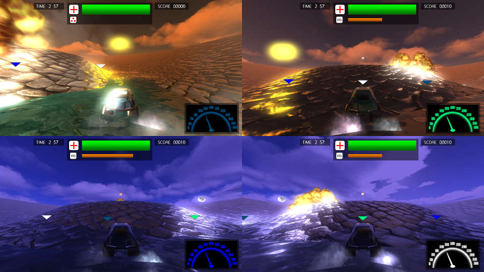Thunderbowl is developed on a custom OpenGL rendering engine and utilizes GLSL shaders and deferred rendering to produce depth-of-field, bloom and motion blur. In deferred shading, a G-buffer is used to store fragment colors, normals, positions and material information to perform lighting calculations, including those, and other, post-process effects. The transparent water also creates its refraction effect, through a technique known as Screen-Space Refraction, with parts of this G-buffer texture.
The game makes use of a day-night shift to transition between night and day lighting as the player drives around the arena. This is accomplished by shifting direct, ambient and sky light between orange and blue based on the player's direction. Since both the sun and moon produce enough light, even the reflections on the vehicles and water respond to this change.
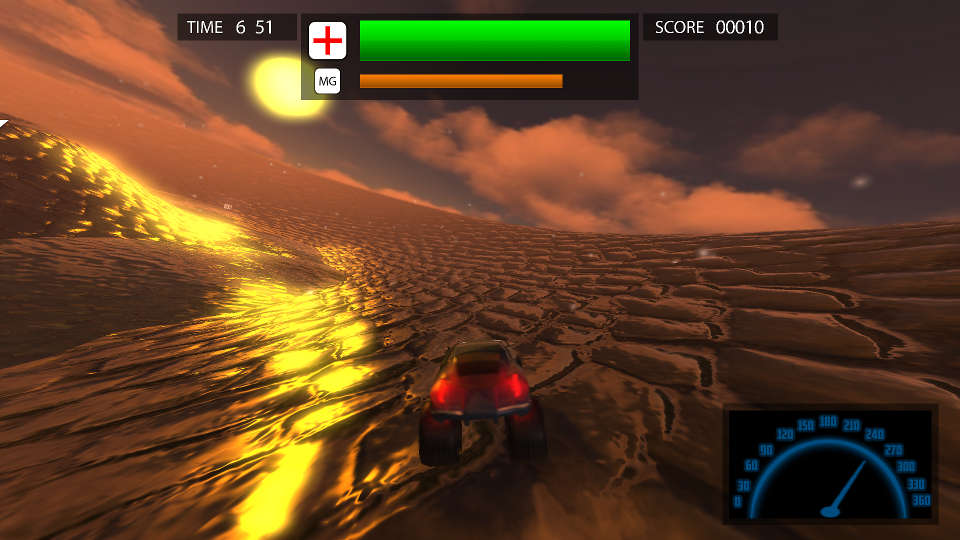To speed up the calculations of roughness, many different, progressively blurrier, versions of the skybox texture were made. This allowed increasing material roughness to be represented by blending between them, rather than by sampling a single map repeatedly and eating away at the memory bandwidth on the poor GPU. This allows the game to run at framerates well above 100 on newer hardware.
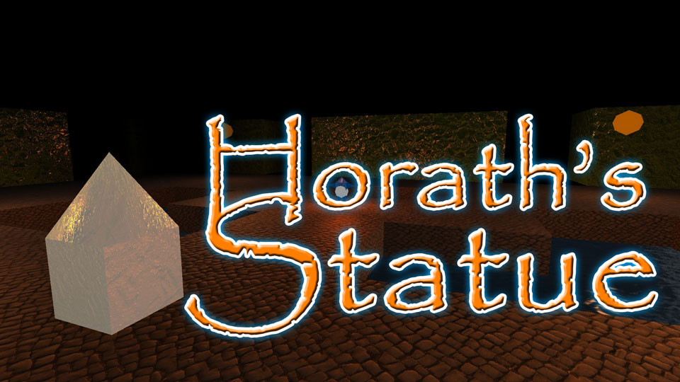Horath's Statue is a 3D, Top-Down, Dungeon Defense, Dual-Stick Shooter for PC (Windows 7, or later). The game was built from scratch with Visual Studio, C++ and OpenGL, by myself and Adam Grosse. I was responsible for building a complete, functional engine and graphics pipeline from the ground up. This included Shader writing in GLSL.
The engine's core rendering information was abstracted to separate classes to make object instantiation and management easy. Rendering an object on the screen in OpenGL requires the creation of three Transform Matrices: Model to World, World to View and View to Projection.
The Model to World Matrix is unique to each object and is formed by multiplying together its Scale, Rotation and Transform Matrices. The Model to World Matrix is based on the camera's Position and Rotation, it rotates the entire world to align with its coordinate system. Finally the World to Projection Matrix, also based on the camera, is calculated using the camera's field of view. This Matrix squashes the entire scene into Projected Space, between -1 and +1 in OpenGL, while applying suitable Perspective Distortion.
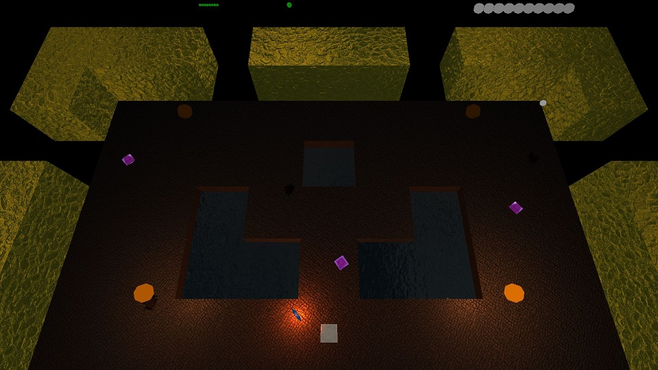A Transform Class stores each object's Vector3 Position, Vector3 Scale and Quaternion Rotation; as well as local forward, up and right references. These pieces of information, now separated and stored as a component of each object, could easily be called upon by the Main Class to construct the individual Model to World Transform Matrices at render time.
This Transform Class was further enhanced with a number of Functions that could manipulate an object's transform as a whole. By affecting each property appropriately, they could be used repeatedly and continue to achieve the correct effect. These Functions included the standard Translate, Rotate and LookAt as well as custom ones made to Lerp Scale and calculate normalized movement speed from four-directional input.
The World to View and View to Projection Matrices were then calculated in a separate Camera Class that supplied the information through a set of Get Functions at render time. This information was then passed down to the GLSL Shader so the GPU could draw the vertices and resulting fragments at the correct locations on the screen.
To make development of the game more streamlined and organized, I wrote a number of support Classes to offload repetitive work. An Input Class automatically tracked key presses and mouse clicks each frame, providing Get Functions that returned up, down and just pressed states simultaneously. A Time Class tracked the CPU clock cycles and calculated information such as Delta Time, Framerate, Total Game Time and Elapsed Frames. A simple Random Class, which extended the C++ rand() Function, to return common random queries such as a number between 0 and 1, or between any integer and float range desired.
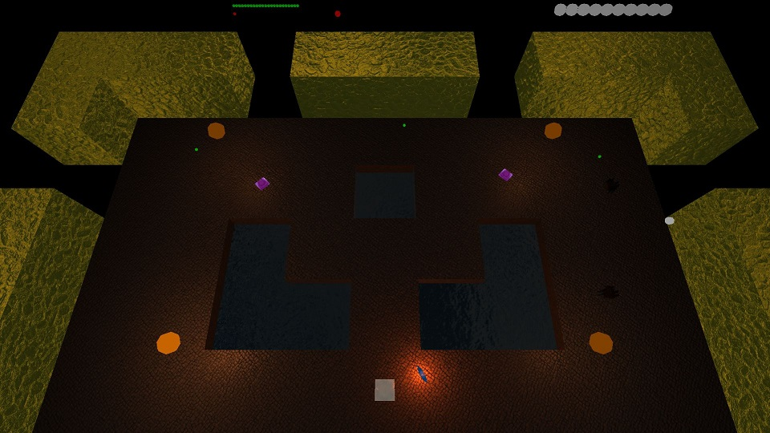In order for the GPU to render pixels to the screen from 3D geometry, it must figure out which ones are in front of the other. First a Vertex Shader was written to import vertex positions from the OpenGL Vertex Buffer Attribute Array. This information is then transferred over to the custom Fragment Shader, where the real fun begins. This is where all of the lighting is calculated to produce the appearance of all objects seen on screen.
To get any information, including texture maps, into the graphics card for Shading, data must be past in C++ into the GPU via Uniforms. To organize all of the individual properties a Material Class was written. This class not only held numeric Float and Vector information, such as color and reflectivity, it also referenced a list of all textures imported to the application at launch. Using the information in this Class as attached to each GameObject, the Main Class could send all of the information to the GPU, in the same manner as the Object to World Transform Matrices.
Once in the GPU, the Fragment Shader uses all of the imported Material properties and light positions, to calculate how the surface should appear. By making use of texture coordinates from the Attribute Array, per-object, animateable, offsets and tiling are used to provide additional mapping capabilities. Lighting and surface normals are calculated via the Dot and Cross Products. Reflections are projected based on view and normal directions and blurred via recursive texture sampling.
Finally, to become a pixel visible on the screen, each fragment must go through the Depth Test, to determine if it is actually visible to the camera and not behind another object. Each fragment reports its depth from a scale of +1, the Far Clipping Plane to -1, the Near Clipping Plane. If the fragment has a depth value lower than the value already in that coordinate of the Depth Buffer, it overwrites it and get its value written to the Color Buffer. If not, it is said to have failed the Depth Test and is discarded from memory. When all fragments have been tested, the Color Buffer in memory switches with the Color Buffer on display and the new frame is presented to the viewer.
Deathceleration is a 3D, 3rd Person, 4-Player, Couch-Rivalry, Vehicular Combat game for the PC, utilizing gamepad controls. Deathceleration was made with the Unity 4 Engine by myself, Jeremy Powell, Thompson Delair-Dobrovolny and Alix Burkhart.
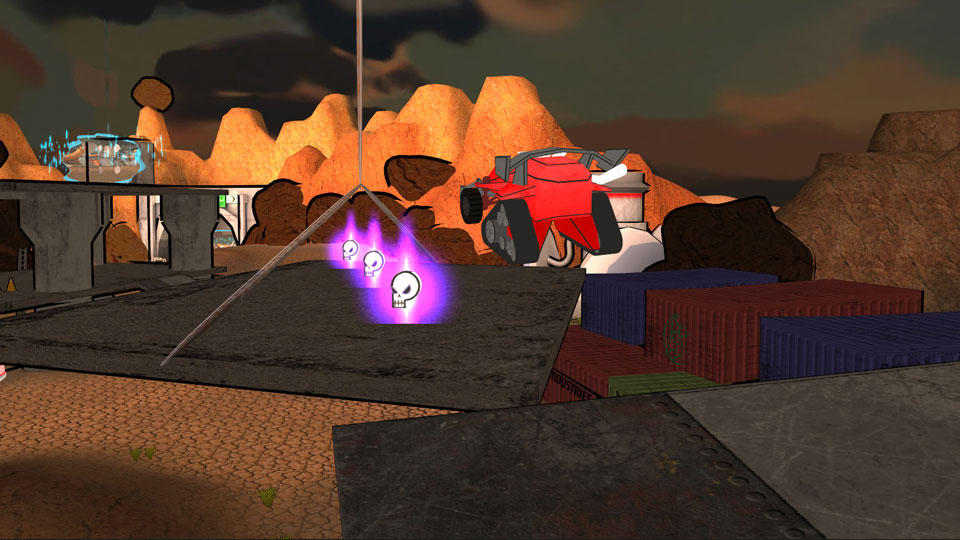As the programmer, I was responsible for architecting all of the core gameplay and combat systems, including the weapons, elements, driving controls and pickups. I was also in charge of ensuring our GUI Designer was aware of, and had access to, all of the game's variables, so they could be reflected correctly in the HUD.
I also wrote a number of custom Shaders in Cg Code for various effects in the game. When playing the game these can be seen on the teleporters, the flag and on the vehicles themselves when they become invisible or get hidden behind an object.
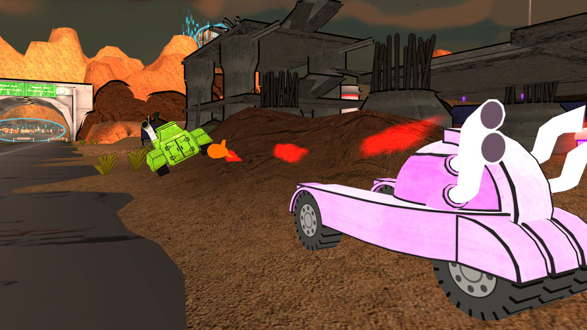The weapons and elements were by far the most intricate systems in Deathceleration as they took several weeks to flesh out and tune into the final result. All three of the weapons inherit from an Abstract Base Weapon Class and then send specific information down to 12 separate Types that define the spawned projectiles.
Each weapon can fire either charged or uncharged projectiles of each of the three element types: Pyro, Chill and Jolt. Whereas uncharged elemental projectiles for each weapon are quite similar, their charged counterparts differ greatly and have distinct advantages and weaknesses in different tactical scenarios. The goal in Deathceleration is to not only know where your curren weapon-element combo works best, but know what your opponents are sporting and ensure you aren't caught as an easy target.
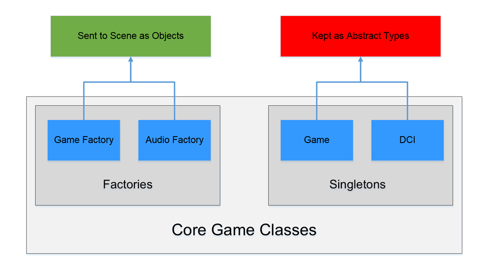Deathceleration was architected with two primary design patterns: Factory and Singleton. As seen in the diagram above. As per Unity's prefab system, the two factories: Game and Audio, were instantiated into the scene so that they could be called upon externally to generate the correct GameObjects and Sounds respectively.
The remaining Classes remained Abstract as their methods did not require specific object references to be executed. This simplified their use to the point where they could be called upon as if they were Type Classes in a Namespace. Game stored Global Enumerations, Constants and Fields that could be used across the project. DCI, standing for Deathceleration Controller Input, was used to further abstract input into a list of methods that would return game specific input.
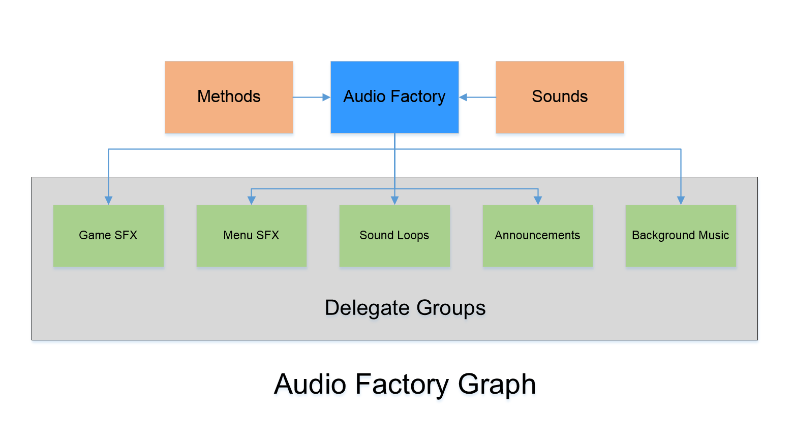One problem we faced earlier on in production was that Deathceleration was a 4-player split screen game, but Unity 4 only supported a single Audio Listener. To solve this dilemma, we settled on 2D sound and I build an Audio Factory from scratch. This factory would not only store all of our game sounds, but play them through categorized lists of sound delegates placed in the scene with the factory. By the end this Audio Factory could individually play, stop, pause and adjust the levels of: Game SFX, Menu SFX, Sound Loops, Announcements and Background Music (BGM).
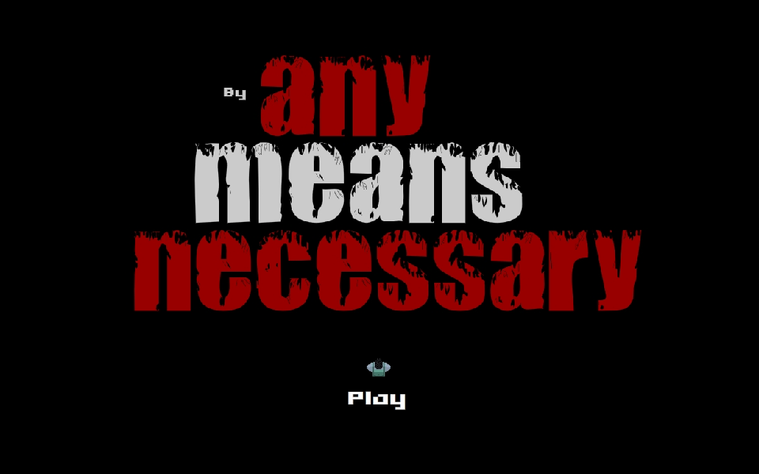By Any Means Necessary is a 2D Top-Down Dungeon Crawler for the web. The game was designed and produced, using Adobe Flash and ActionScript 3.0, by myself, Mike Luxton and Dale Schollen. I was responsible for all of the programming on the game. This involved the building of a basic game engine, implementation of all gameplay mechanics, as well as all GUI functionality.
The game is architected heavily around Inheritance and Polymorphism. The concrete enemies are all derived from multiple levels of inheritance from a single abstract base class containing the majority of their behaviour. Each enemy type overrides properties and methods from the base as needed to form 3 separate behavioural patterns. Each of these these abstract behaviour classes are inherited further into three difficulty levels containing adjustable properties from the original Enemy class as well as unique ones from the immediate base class.
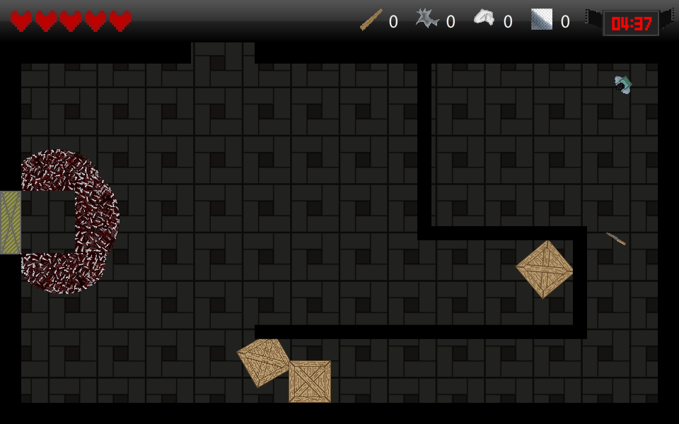By Any Means Necessary is built around the idea of teaching new players how to play without the use of explicit text, or video tutorials. The main menu features the game's primary controls built in. Before the player even enters the game world, they will know how to look around and attack, as both are required to start the game. Once in the game, the player will notice the very same knife lying nearby, and when they pick it up, they will hear the same sound from the menu, reinforcing this concept.
In order to progress past the first room, players must then break the crates blocking the path. Not only does this reinforce the attack controls, but it also shows the player that crates contain resources, visibly tallied on the HUD. By establishing the link between HUD icons, and those in game, the player's mental connections to these items, which become instrumental later, begin to form even before the player has the distraction of combat.
From there, each of the early levels is designed specifically to help the player get a feel for the controls. From narrow hallways to surprisingly convenient ambush setups, these early areas esablish the player's footing in the world.
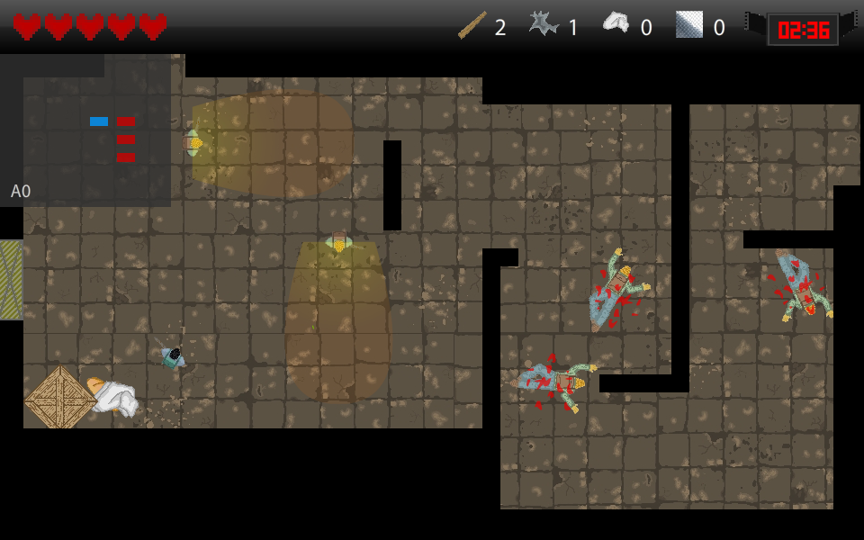Besides the persistent HUD at the top of the screen, which contains the information most critical to play, the game also features a mini-map on the upper left corner. The game world is divided into 3 distinct areas. The map displays all of the rooms the player has visited color coded by area, with a blinking dot indicating the player's current location. If the player is more textual, the current room's name code is displayed in the lower left corner of the map, ensuring that players of all types will find the map useful for navigation.
The mini-map can also be toggled. Not only does this enable players to remove it in heated situations, where they don't want the distraction of an overlay, but more importantly, it allows players to play without its aide, if they prefer.